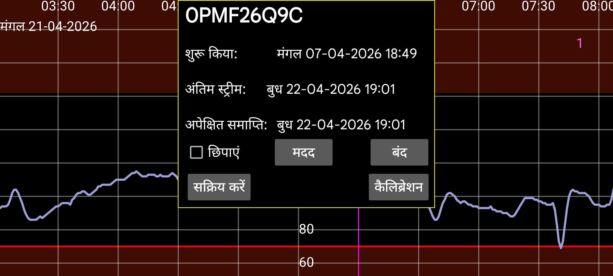

सेंसर का आरंभ, अंतिम स्ट्रीम, अंतिम स्कैन और अपेक्षित तथा आधिकारिक समाप्ति समय प्रदर्शित करता है।
वार्मअप: Sibionics और Linx/Lumiflex/Aidex X सेंसरों के लिए आप वार्मअप अवधि के मिनटों की संख्या बदल सकते हैं। सभी फंक्शन वार्मअप अवधि के दौरान डेटा को अनदेखा करेंगे: स्क्रीन पर वक्र, आंकड़े, एक्सपोर्ट किया गया डेटा और वेब सर्वर में दिखाई देने वाला डेटा। साथ ही, पिछले समय के लिए भी।
छिपाएं: चेक करने से वक्र छिप जाता है। अनचेक करने के अलावा, आप स्क्रीन के निचले दाएं कोने में “दिखाएं” दबाकर भी वक्र को फिर से दृश्यमान बना सकते हैं।
कैलिब्रेशन: यदि आपने बायां मेन्यू→सेटिंग्स→कैलिब्रेशन में रक्त ग्लूकोज लेबल निर्दिष्ट किया है और बायां मध्य मेन्यू→नई मात्रा के साथ रक्त ग्लूकोज मापन दर्ज किए हैं, जो बाहर नहीं रखे गए थे, तो आप किए गए कैलिब्रेशनों की सूची प्राप्त करने के लिए “कैलिब्रेशन” बटन दबा सकते हैं। देखें: https://www.juggluco.nl/Juggluco/index.html#calibration
सक्रिय करें: समाप्त सेंसरों के लिए “सक्रिय करें” बटन प्रदर्शित होता है। इस बटन को दबाकर आप पैकेज पर डेटा मैट्रिक्स को स्कैन किए बिना फिर से सेंसर का उपयोग कर सकते हैं। आप इसे Libre 2 और 3 सेंसरों के लिए भी उपयोग कर सकते हैं, पर यदि आपने किसी अन्य फोन पर Juggluco के साथ सेंसर को स्कैन किया है, तो सेंसर वापस पाने के लिए हमेशा NFC के माध्यम से सेंसर को फिर से स्कैन करना आवश्यक है।